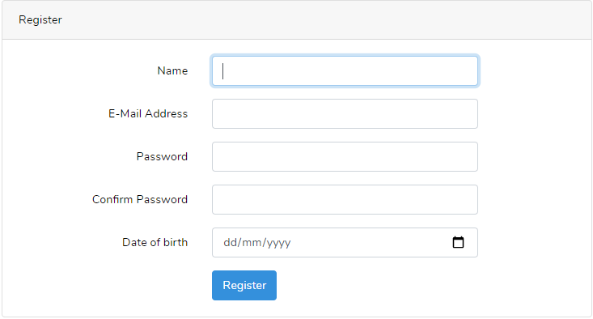

Technical Achievements 
Sprint One
-Laragon
    When we started this project, 
    we were unable to get a laravel 
    project that was pulled from the 
    github repo to work on anyone elses computers but the person who had made it. 
    This was a good problem to have as it taught me what the intial set up 
    processes that were needed for a laravel project and what each step was for, for example composer and npm.
    I decided that this would be a problem I would tackle as I felt that if I didnt it would be an issue for the rest of the project.


-Authentication
    my user stories for this sprint all related to authentication of user accounts,
    so I had to research how the laravel authentication package worked.
    Reading the documentation and figuring out the code was useful not 
    only just because it helped me accomplish my stories for the sprint 
    but also because it is a useful skill to be able to read someone elses code and find out how it works.
    
    This also allowed me to implement agile principle ten as I only had to add my teams required custom fields 
    (Date of birth) to the registration page in order to get authentication working to our reqired specifications 

-Personal reflection
    This sprint was an interesting intial test of our group work and dynamic, I believe it went smoothly (despite the covid interupption in the second week)
    I tried to set a good precendent in my work for this sprint, I had all of the features I was assigned by the leader finished by the day of presentation, 
    however due to the time to merge all the groups work together, some features were in code, but not accesible within the application.

    What did I do well?
        I made solid leaps in my understanding of laravel and how it functioned, and I made a determined effort to learn and research fixes for our early system issues that we encountered.
        This helped the group as I was able to be a point of reference if someone had these issues again in the future or were confused on the steps required to fix an issue.
        I got all of my user tasks finished on time, before the user meeting. 
        I took notes during the client meeting of what features he wanted us to focus on for the next sprint, 
        meaning that the team had a record of what we needed to fulfill when creating user stories and assigning tasks 
    What could I have done better


